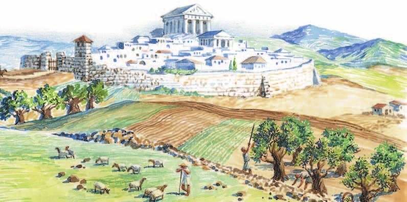
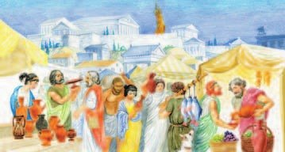
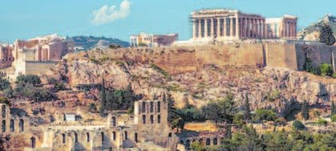
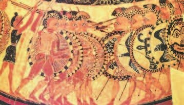
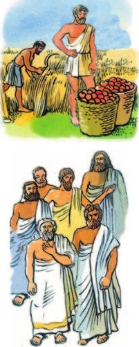
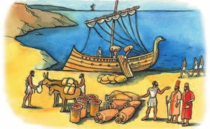

«Тёмные века»
— так называют время с середины XII до VIII века до н. э. Почему «тёмные»? О них мало что известно: своих письменных источников нет, и чужеземцы о Греции тогда не писали.
Ахейские города опустели, дворцы забросили. Не стало ни всемогущего царя, ни его чиновников — помнишь Микены из §20? Людей стало меньше.
Люди жили маленькими общинами и почти не общались с соседями. Главными были знатные — старейшины и военные вожди: у них самая лучшая и большая земля. Всё нужное община делала сама: еду, одежду, обувь, орудия, оружие.
Письменность Крита и Микен забыли. Посуду расписывали простым узором из геометрических фигур. Строили из дерева и сырцового кирпича — его не обжигали, а сушили на солнце. Торговля с соседями прервалась. Так прошли столетия.
Что всё изменило? Греки освоили железо — оно прочнее бронзы. Вернулись забытые ремёсла: украшения, тонкая посуда. Появились новые — из бронзы делали панцири, шлемы, сосуды и даже статуи. К середине VIII века до н. э. упадок кончился.
«Тёмные века». Так называют время упадка греческой истории с середины XII (12) до VIII (8) века до н. э., о котором известно немного. Отсутствуют и письменные источники этого периода, и упоминания о Древней Греции в сообщениях иностранных авторов.
Большинство ахейских городов опустели, царские дворцы заброшены. Окончательно разрушена система управления микенских государств во главе со всемогущим царём и многочисленными чиновниками. Население сократилось. Люди жили в основном небольшими замкнутыми общинами и не поддерживали тесных связей. Главенствующее положение в общине занимала родоплеменная знать — старейшины и военные вожди. Они владели лучшими и большими участками земли, простые общинники имели небольшие наделы. Хозяйство общины было натуральным: общинники сами производили продукты, изготавливали одежду, обувь, орудия труда, оружие и т. п. Древняя Греция представляла собой мир сотен таких мелких общин.
Культура также пребывала в упадке. Письменность, существовавшая на Крите и в Микенах, была забыта. Простой узор из геометрических фигур был основной росписью на изделиях гончаров. Почти все постройки возводили из дерева и сырцового (необожжённого, высушенного на солнце) кирпича. Прервалась ранее оживлённая торговля с соседними странами. Так проходили столетия.
Новый подъём Древней Греции был связан с освоением железа. Изделия из него были прочнее бронзовых. Возрождались забытые ремёсла, в частности изготовление ювелирных украшений и тонкостенной керамики, появлялись новые, например изготовление предметов из бронзы: панцирей, шлемов, сосудов и даже скульптурных изображений. К середине VIII (8) века до н. э. древнегреческое общество выходит из состояния упадка, в котором пребывало после гибели микенской цивилизации.
- Подумай, почему наступил период, который называют «тёмные века».
1. Письменность Крита и Микен забыли. Как это связано с тем, что не стало царей и чиновников?
2. Почему в «тёмные века» прервалась торговля? Найди связь с тем, как жили общины.
3. Чем железо помогло грекам — и что после этого стали делать из бронзы?
Возникновение полиса
В VIII—VI веках до н. э. в Греции появляются — маленькие государства. Полис — это город и его сельская округа. Иногда границы проводила сама природа: горный хребет или море.
Полисы небольшие: от нескольких сотен до нескольких тысяч граждан. Но у каждого своя власть, своё войско и своя казна. Каждый полис независим.
Главное в полисе — . Там сами граждане принимали законы, решали, воевать или мириться, выбирали судей. Это как день самоуправления в «Концепте» — только всерьёз и всегда.
Сердце полиса — . Это и площадь для собраний, и рынок. Представь рынок, куда вы ходите за фруктами и овощами, — а посреди него граждане решают дела всего города. На агоре стоят алтарь, здания совета и суда, доски с высеченными законами, статуи богов. По краям — : крыша на колоннах, там гуляли и встречались с друзьями.
Рядом с агорой жили ремесленники: в доме у каждого была и мастерская. А над агорой поднимался — «верхний город» на холме, со стеной и главным храмом. Там хранились казна и святыни.
Город окружали прочные стены. В опасность за ними прятались все — и горожане, и жители деревень вокруг. Расцвет полисов — V век до н. э.
Полисов было несколько сотен, и все разные: смотря чем занимались жители и где стоял город.
Афины — в 5 километрах от моря, но с портом Пирей: там военная и торговая гавани. Много гор, а в горах — свинец и серебро Лаврийских рудников. И большая сельская округа.
Коринф стоял между двумя морями. Товары перетаскивали волоком из одной его гавани в другую: так удобнее и безопаснее, чем плыть вокруг всего Пелопоннеса. За это Коринф брал с купцов плату — пошлину. Земли для полей мало — поэтому здесь развивались ремесло и торговля.
Спарта — вообще не город, а несколько посёлков с общим центром. И без стен! Зато земля плодородная: своего урожая гражданам хватало.
В VIII (8) — VI (6) веках до н. э. в Греции складываются государства-полисы. В каждый полис входили город и его сельская округа. Природа порой сама устанавливала границы полиса, отгораживая некоторые из них от остального мира горными хребтами или морем. Полисы были независимыми и небольшими, их население составляло от нескольких сотен до нескольких тысяч граждан. Каждый полис имел собственные органы власти, войско, казну. В Народном собрании могли принимать участие только полноправные граждане полиса. Собрание принимало законы, по которым жил полис, утверждало объявление войны и заключение мира. Здесь избирали судей, следивших за исполнением законов.
Центром общественной и торговой жизни полиса была агора — площадь для Народных собраний. Здесь располагалось здание, где пребывали главные должностные лица полиса. На агоре находились алтарь, здания для собраний совета и суда, размещались доски с высеченными на них законами. Агору украшали статуи богов и политических деятелей. Рядом находились портики — полуоткрытые помещения, крыши которых поддерживали колонны. Портики служили местом прогулок и встречи друзей.
Недалеко от агоры жили ремесленники. В доме ремесленника находилась и мастерская, где он выполнял заказы покупателей. Агора обычно располагалась у подножия Акрополя.
Город окружали прочные стены. За ними в случае опасности могли укрыться все жители полиса, включая обитателей окрестных селений. Расцвет древнегреческих полисов приходится на V (5) век до н. э.
В Древней Греции существовало несколько сотен самостоятельных государств-полисов. Они были похожи друг на друга, однако развитие каждого определяли занятия его населения и месторасположение. Например, в одном из самых крупных полисов, Афинах, которые находились на расстоянии 5 километров от моря, важную роль играл порт Пирей с военной и торговой гаванями. Бóльшую часть полиса Афины занимали горы. Открытые здесь залежи свинца и серебра интенсивно разрабатывались в Лаврийских рудниках. У Афин была обширная сельская округа.
Другой крупный полис — Коринф — контролировал морские торговые пути, что было причиной его процветания. Одна гавань полиса выходила в Эгейское море, другая — в Ионическое море. Переправлять товары волоком из одной гавани в другую было удобнее и безопаснее, чем плыть вокруг всего Пелопоннеса. За это Коринф взимал с купцов пошлины. Коринф всегда страдал от малого количества пригодной для сельского хозяйства земли, что привело к активному развитию ремесла и торговли.
Спарта не была городом, а являлась объединением нескольких посёлков с единым общественным центром и не имела оборонительных стен. Плодородные земли Спарты полностью обеспечивали её граждан сельскохозяйственной продукцией.


- Как было организовано управление полисом?
- Почему агора считалась центром жизни полиса?
4. Афины и Коринф — оба богатые. Но богатели они по-разному. Как?
5. Почему Спарта могла жить своим урожаем, а Коринф — нет?
6. Чем полис не похож на Микены из §20?
Население полисов
Во главе полисов встали — люди из знатных и богатых семей. Они вели свой род от царей или героев — настоящих или придуманных. Только их выбирали на высшие должности.
Простые жители — земледельцы, ремесленники, торговцы — назывались . Они трудились с утра до вечера. Демоса было гораздо больше всех остальных, и его влияние всё росло.
Основой войска были аристократы: только у богатых хватало денег на коней, копья, мечи, щиты и доспехи. Конница — важная часть войска. Тяжеловооружённых пеших воинов звали . А земледельцы, ремесленники и торговцы шли в лёгкую часть войска.
Гоплиты бились строем — : плечом к плечу, в несколько рядов, прикрывшись щитами и выставив копья.
Кто гражданин? Не каждый, кто живёт в полисе, — только мужчины-граждане. Они могли владеть землёй, голосовать в Народном собрании и приходить с оружием в народное ополчение. Защищать родину было для них не только долгом, но и потребностью. А полис защищал их: помогал инвалидам, вдовам и сиротам.
Женщины в делах полиса не участвовали: вели хозяйство и растили детей.
Жили в полисе и свободные чужеземцы — . Своей земли у них быть не могло, поэтому они занимались ремеслом и торговлей.
А ещё — рабы. Рабом мог стать грек, который не вернул долг. Или чужеземец: пленный или купленный на рабском рынке. Греки называли раба «говорящее орудие». Рабы были у отдельных хозяев и у самого полиса. Они работали слугами, в поле, в мастерских, на рудниках и в каменоломнях, а у должностных лиц — глашатаями, факельщиками, писцами.
Во главе полисов встали аристократы, выходцы из знатных и зажиточных семей, которые вели происхождение от реальных или вымышленных царей или героев. Аристократы занимали ведущее место в управлении государством и войском, только они могли избираться на высшие должности.
Простые жители полиса — земледельцы, ремесленники, торговцы — назывались демосом. Они с утра до вечера упорным трудом добывали себе пропитание. Демос составлял подавляющую массу населения в каждом полисе, и его влияние на дела государства постоянно возрастало.
Основу войска составляли аристократы. Эти богатые люди имели средства для покупки и содержания лошадей. Конница была важной частью греческого войска. Аристократы приобретали вооружение: копья, мечи, щиты, доспехи и т. п. Тяжеловооружённых пеших воинов называли гоплиты. Земледельцы, ремесленники, торговцы составляли легковооружённую часть войска.
Гражданами полиса считались не все проживавшие в нём. Права и обязанности имели только граждане-мужчины: владеть государственной землёй и частным наделом, принимать участие в Народном собрании, в военной организации полиса — народном ополчении, куда гражданин являлся вооружённым. Защищать свою родину, свою землю и свои законы было не только долгом, но и потребностью гражданина полиса. Полис, в свою очередь, защищал своих граждан: инвалиды, вдовы, сироты получали от него поддержку и защиту.
Женщины были отстранены от государственной жизни. Они занимались лишь ведением домашнего хозяйства и воспитанием детей.
Кроме полноправных граждан, в каждом полисе жили свободные, но не имевшие гражданских прав чужеземцы, их называли метеки. Они не могли иметь собственного надела земли и занимались ремеслом и торговлей.
С давних времён в Греции существовало патриархальное рабство. Позже возникло долговое рабство: рабами становились те греки, которые не могли выплатить долги. Рабами были не только греки, но и чужеземцы — те, кого захватили в плен либо купили на рабском рынке (в Лидии, Фракии, Скифии). Греки называли раба «говорящее орудие». Рабы делились на частнособственнических, принадлежавших отдельным людям, и государственных — ими распоряжался полис. Рабы использовались в качестве слуг, часто они вместе с хозяином обрабатывали принадлежавшую семье гражданина землю или трудились в его ремесленной мастерской. Государственные рабы помогали должностным лицам в полисе в качестве глашатаев, факельщиков, писцов. Часто рабов использовали в государственных мастерских, на рудниках и в каменоломнях.


- Какие группы населения проживали в полисе?
- Чем граждане полиса отличались от остального населения?
7. Как богатство человека было связано с его местом в войске?
8. Метеки и рабы — оба не граждане. Чем же они отличаются?
9. Почему защищать полис было для гражданина «не только долгом, но и потребностью»?
Полис и внешний мир
В маленьком полисе не сделать на месте всё, что нужно. Поэтому полисы торговали по Эгейскому и Средиземному морям. Торговля стала очень важной.
Людей в Греции жило больше, чем могла прокормить её земля, — помнишь «мало только хлеба» из §20? За море везли оливковое масло, вино и изделия ремесленников, а назад — зерно и дорогие вещи.
Торговля снова связала греков с Востоком, и у восточных народов они переняли деньги. Только на Востоке монеты были в основном золотые, а греки чеканили серебряные. Самая ходовая монета — , чуть больше 4 граммов. Наша монета в 10 рублей весит 5,6 грамма — драхма немного легче. Положи десятирублёвку на кухонные весы и представь серебряную монетку чуть поменьше.
И алфавит греки взяли у финикийцев (§13) — но добавили к знакам согласных знаки гласных.
Греки не копировали чужое слепо, а переделывали под себя.
В небольшом полисе трудно было производить на месте всё необходимое человеку. Поэтому полисы вели торговлю в Эгейском и Средиземном морях. Торговля стала важной отраслью хозяйства Древней Греции.
В Греции жило намного больше людей, чем могла прокормить её земля. Торговля позволяла пополнять запасы продовольствия и способствовала восстановлению связей с восточными цивилизациями. Эллины заимствовали их достижения, например деньги. Но в отличие от стран Востока, где были распространены золотые монеты, в Древней Греции чеканили в основном серебряные. Самой распространённой монетой стала монета драхма, весившая чуть больше четырёх граммов.
Греческий алфавит формировался на основе финикийского. Эллины добавили к знакам согласных звуков, существовавшим у финикийцев, знаки гласных.
Греки не слепо заимствовали чужие достижения, а творчески их перерабатывали, умело приспосабливая к своим нуждам.

- Какие отношения связывали древнегреческие полисы с внешним миром?
10. Как связаны нехватка хлеба и греческая торговля?
11. Найди в разделе два примера того, как греки «не слепо заимствовали».
Подведём итоги
- Что такое древнегреческий полис?
- Сравни греческие полисы с городами-государствами Древнего Востока. Что у них общего? В чём различия?
- Как ты думаешь, почему в Греции появились города-государства нового типа?
- Чем был вызван рост влияния демоса в полисе?
- Как ты думаешь, какую роль играл тот факт, что человек являлся или не являлся гражданином полиса? Свой ответ объясни.
Прочитай список понятий. Какое из них лишнее? Объясни почему. Демос, гоплиты, метеки, аристократы.
Сформулируй ответ на главный вопрос параграфа — в чём заключалось своеобразие полиса? Приведи два-три довода.
Проверь себя
Нажимай по очереди — от самого древнего к самому близкому к нам. Тут есть и §20.
1. Как называют время упадка в Греции с XII по VIII век до н. э.?
2. Что входило в полис?
3. Где собиралось Народное собрание?
4. Кого называли демосом?
5. Кто такие метеки?
6. Какие монеты чеканили в Древней Греции чаще всего?
Расскажи вслух
«Тёмные века»
- С середины XII до VIII века до н. э.; «тёмные» — потому что о них мало известно.
- Города опустели, царей и чиновников не стало, письменность забыта, торговля прервалась; общины жили сами по себе.
- Подъём начался с освоения железа; к середине VIII века до н. э. упадок кончился.
Что такое полис
- Полис — город и сельская округа, маленький и независимый; VIII—VI века до н. э.
- Своя власть, войско и казна; законы принимает Народное собрание граждан, оно же решает о войне и мире и выбирает судей.
- Агора — площадь собраний и рынок; Акрополь — «верхний город» с храмом и казной; вокруг — крепкие стены.
Афины, Коринф и Спарта
- Афины: порт Пирей, серебро Лаврийских рудников, большая округа.
- Коринф: между двумя морями, пошлины с купцов, мало земли — ремесло и торговля.
- Спарта: посёлки без стен, плодородная земля кормит граждан.
Кто жил в полисе
- Граждане-мужчины: аристократы (высшие должности, конница) и демос (земледельцы, ремесленники, торговцы).
- Женщины — дом и дети; метеки — свободные чужеземцы без прав, ремесло и торговля.
- Рабы — должники, пленные, купленные; «говорящее орудие».
Главный вопрос: в чём своеобразие полиса
- Им управляют сами граждане: законы, война и мир, суд — решает Народное собрание.
- Гражданин сам защищает полис в ополчении, а полис помогает своим гражданам.
- Полис маленький и независимый, живёт торговлей и умеет переделывать чужое под себя.